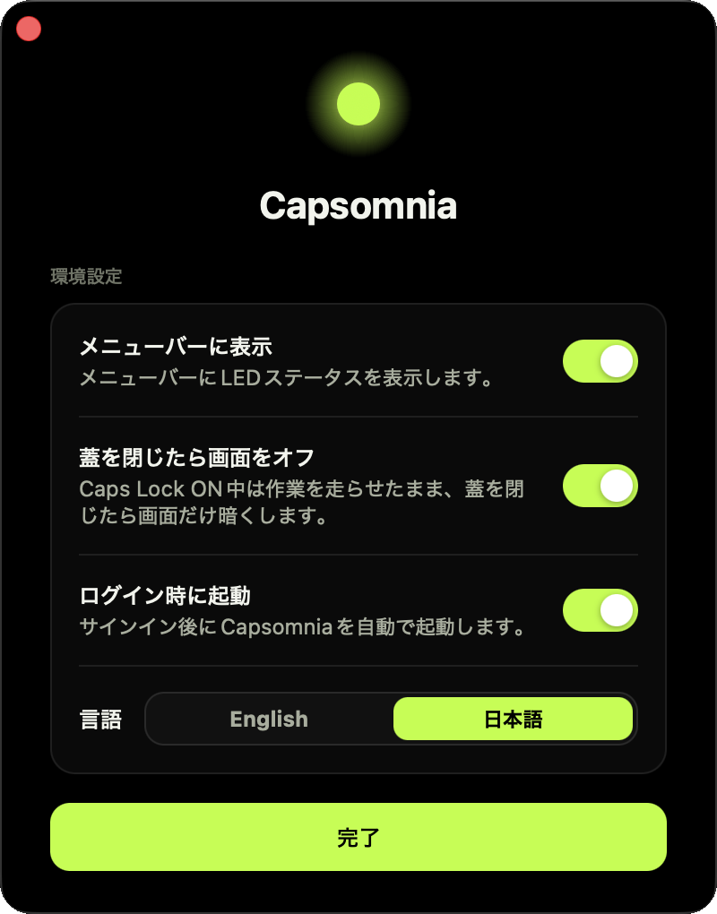

Closed lid
蓋を閉じても処理が続行
Caps Lockをオンにすれば、MacBookの蓋を閉じてもローカル処理を走らせ続けます。SSH接続先としても使い続けられます。
Caps Lock becomes a physical keep-awake switch. Flip it on, close the lid, and let your background work keep running.
macOS 14 Sonoma+ · Signed & notarized · Open source
Caps Lock on
Runs pmset -a disablesleep 1 — sleep is disabled.
Caps Lock off
Runs pmset -a disablesleep 0 — normal sleep behavior.
When a long-running local job should keep going while you step away, flip Caps Lock on. Close the lid. Capsomnia keeps the machine awake until you flip it back.
Let Codex or Claude Code keep working on long tasks while the lid is shut.
Drive your Mac remotely without it dropping into sleep mid-session.
Long compiles and large downloads finish on their own time.
Batch jobs and overnight scripts run to completion, untouched.
Features
Capsomniaは、蓋閉じ作業の継続、物理ライトでの状態確認、無料OSSとしての透明性に絞った小さなMacアプリです。
Closed lid
Caps Lockをオンにすれば、MacBookの蓋を閉じてもローカル処理を走らせ続けます。SSH接続先としても使い続けられます。
Physical state
ランプが点いていればスリープ抑止中。メニューバー表示なしでも分かるので、画面を汚しません。
Open source
MIT Licenseで公開。ソースコード、helperが実行できるコマンド、安全性モデルを確認できます。

The menu bar app runs as the current user — never as root. Changing system sleep settings needs elevated
privileges, so Capsomnia uses one small, fixed, root-owned helper through passwordless sudo.
sudo -n /Library/PrivilegedHelperTools/capsomnia-pmset on
sudo -n /Library/PrivilegedHelperTools/capsomnia-pmset off
sudo -n /Library/PrivilegedHelperTools/capsomnia-pmset display-sleepThe sudoers rule is limited to these three exact commands.
/usr/bin/pmset -a disablesleep 1
/usr/bin/pmset -a disablesleep 0
/usr/bin/pmset displaysleepnow
It accepts on, off, and display-sleep and nothing else.
Quitting the app, or running ./scripts/uninstall.sh, restores normal sleep behavior.
Sleep-disabled closed-lid use can increase heat and battery drain — mind airflow, power, and runtime.